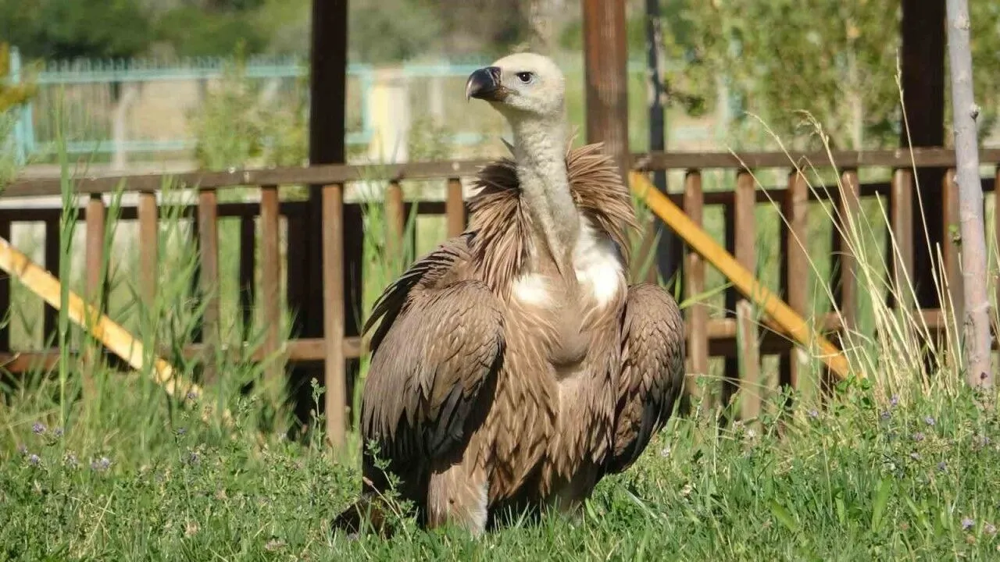

Akbaba, doğanın temizlik görevlisi olarak bilinen ve ekosistemde kritik bir rol üstlenen yırtıcı kuşlardan biridir. Güçlü gagası ve keskin görüşü sayesinde leşleri hızla bulur ve tüketerek hastalıkların yayılmasını önler, böylece çevrenin sağlıklı kalmasına katkı sağlar. Avrupa, Asya, Afrika ve Amerika kıtalarında farklı türleriyle görülen akbabalar, genellikle sürüler halinde hareket eder ve geniş kanat açıklıkları sayesinde uzun süre havada süzülerek enerji tasarrufu yaparlar. Tek eşli bir yaşam süren bu kuşlar, yuvalarını yüksek kayalıklara veya ağaçlara kurar. Tarih boyunca hem korku hem de hayranlık uyandıran bir figür olarak kültürel sembollerde yer bulan akbaba, doğanın döngüsünde vazgeçilmez bir denge unsuru ve yaşamın sürekliliğini sağlayan sessiz bir kahramandır.